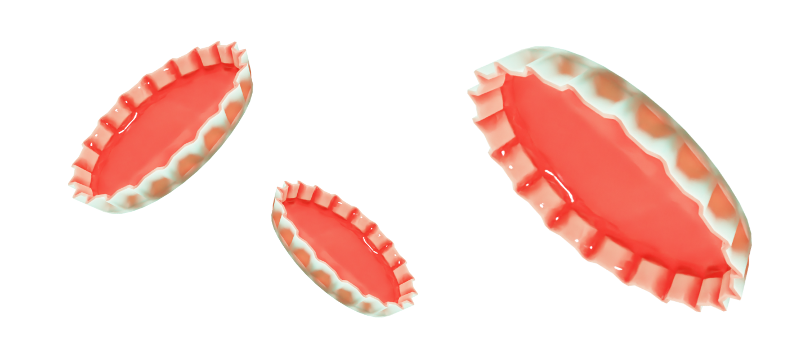
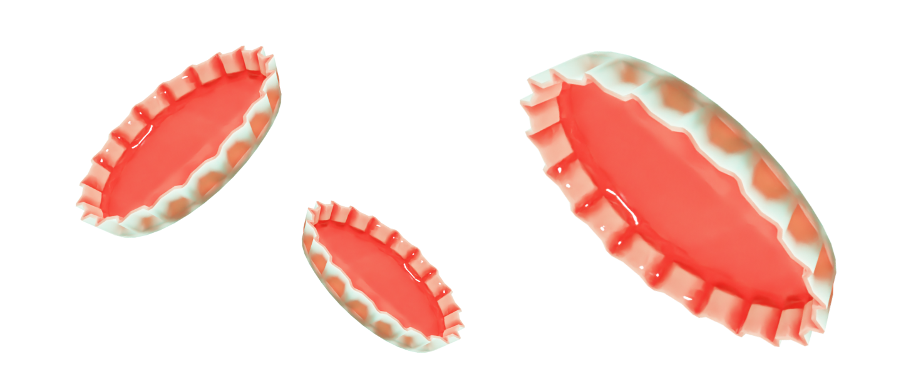

Как
выбросить
крышки?
выбросить
крышки?
 

Факты:
Название
Крышки
Материал
Полиэфир
Использование
Широкое
Важно!
*Некоторые виды пластиковых крышек для бутылок содержат
опасные химические вещества.
Крышки от бутылок
Жестяные крышки — это неизбежный элемент упаковки при покупке
консервов и другой продукции. Однако, после использования
крышки могут стать источником негативного влияния на окружающую
среду.
Негативные свойства
Большое количество крышек попадает на свалки
и не разлагается в течение десятилетий,
что приводит к загрязнению окружающей среды.
Что с ними делать?
Крышки можно переплавить и использовать в качестве сырья
для производства новых крышек.
Крышки можно сдать на специальные пункты переработки, где они
будут утилизированы безопасным для окружающей среды способом.
Крышки можно использовать в качестве материала
для создания различных хобби-изделий, например, декоративных
предметов, кукол и т.д.